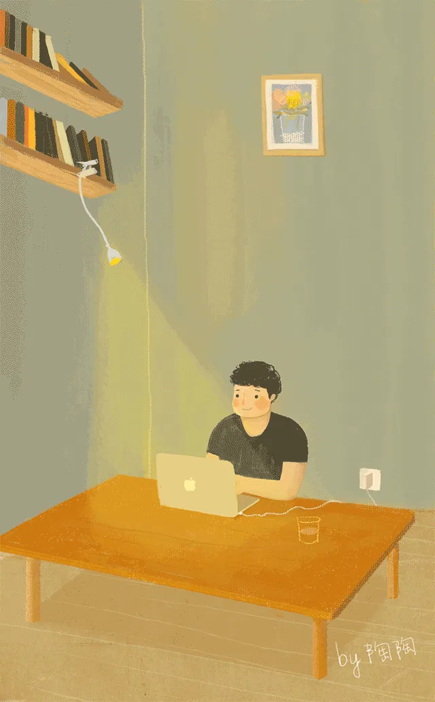

今天在 CSDN 看到《如何看待许多年轻人 “疯狂” 的投入到 IT 培训当中》一文，于是想起了大学毕业之际参加嵌入式培训的那段时光，嘻嘻，投个稿～
我是非计算机专业本科毕业的，学校也不是很差，但基本上是玩到了大四，可是直到快要毕业，我的内心还对一件事情耿耿于怀：硬件和软件是如何配合工作的？
由于在学校难以得到老师的专业指导，而大四那年学业不是很繁忙，于是我决定参加去脱产的嵌入式培训班，此举让身边的同学都傻了眼，因为这意味着我将错过大部分不错的校园招聘，而且每天早出晚归地学一些不知道有没有用的东西，同时也成了负资产。
我的想法其实很简单，就是想知道那些软件到底是怎么样控制硬件的？我想花点时间把它弄懂，至少是弄懂一些皮毛吧，这样会让我活得踏实一点。因为我觉得现在不弄懂的话，以后如果从事别的行业估计一辈子都不用懂了。
然后就这样开始了整整半年的培训，培训班的同学五花八门，有企业老板，有公务员，有待业的，有本科、专科在校学生，值得一提的是几乎有一半是来自同一个学校同一个专业的学生，美其名曰：校企合作。为什么会特别提到这批 “校企合作” 的学生呢？因为这跟今天将的话题有关 —— 该不该参加 IT 培训？
实际上，据不完全统计，学习效果和就业情况最差的就是这类型的学生！为什么呢？因为这些学生本身来自教学水平和学习氛围较差的学校，同时学习能力和自律性较差，而且很多人的心态不正确，比如有的是迫于学校压力或毕业设计来的，有的是看身边的同学来了所以也来了，有的是看到 IT 行业工资高所以来了…… 根本就没考虑过自己合不合适，应不应该。
那么，下面就聊聊我对 IT 培训的一些浅见：
首先，必须明白的是，IT 培训机构鼓吹的 “就业缺口大、起薪高、前景好” 是有条件的，软件工程是一个很奇葩的行业，允许很多参差不齐的程序员入行，但是你有没有想过，能用的程序≠正确的程序。所以，所谓的就业缺口大，是指缺乏真正懂计算机的人，而不是会写几行代码的人。培训机构经常张贴一些就业明星，让大家觉得参加完培训就能随便拿到 10k+ 月薪的 offer，但实际上，大部分高薪就业的学员，其实即便不参加培训也能获得一份不错的 offer。所以这也是我要强烈提醒的一点：认识你自己！
只有当你清楚自己想得到的是什么？而培训机构能否提供你想要的？这时候，你才应该考虑是不是要参加培训。
对于我来说，培训机构能提供的是：
- 学习环境 —— 靠谱的培训机构都有比较完善的一套课程体系，对于基础不扎实的同学来说，这是一次很好的补救机会，会对整个学习路线有清晰的认识，也少走一些弯路，这一点我觉得对初学者来说很重要，而这也是很多高校教育所欠缺的；同时，天天灌鸡汤的学习氛围也能在一定程度上提高学习的积极性；另外，在技术方面，前辈的正确指导在入门初期尤为重要。
- 行业动态 —— 我毕业的时候学校搞 “产、学、研”，现在搞各种 “创客空间”，说明了一个很现实的问题，学校教育与产业发展严重脱节！导致很多工科学生在学校学的东西根本难以在社会上谋求一职，而现在教育家们也终于觉醒并且行动了，但显然晚了一点，否则这几年培训机构怎么会这么火呢？甚至到现在，我身边也有很多同事，整天埋头搞研发，结果到头来问这个不知道、那个不知道。所以一定要了解行业发展形势呀，否则不淘汰你实在天理难容！
- 就业机会 —— 据我了解，正规的培训机构都与很多企业有长期联系，也是因为企业发现学校难以培养他们所需的人才吧，所以有些会委托培训机构做 “定向培训”，但相信我，绝对没有 “包就业” 的说法！基本上就是推荐就业、组织招聘会等等，所以如果你学不好的话，当然是没有企业愿意招聘的。放心，培训机构也不会不管你，毕竟你是交了钱的，那就让你再培训一期呗，时间成本啊！
- 人脉关系 —— 对于非科班出身的程序员，这一点是应该是比较看重的，说不定你的老师、同学以后就是你的老板、同事呢，哈哈。还有，你有没有发现，招聘网站上很少有招 10 年以上的程序员，不是程序员干不过 35 岁，而是到了那个岁数，基本上不靠投简历来找工作了。
- ……
再来说一下，培训机构不能给你带来的是：
- 学习能力 —— 短短的几个月，培训机构难以为你带来学习能力的提升，哦，即便是几年，也很难。因为学习能力是一种自发行为，而这恰恰是程序员的核心竞争力。
- 职业规划 —— 咦，上面不是说提供就业机会吗？额…… 虽然提供就业机会，并且很多培训机构也有职业规划的课程，但很遗憾，就像医生给病人治病一样，跟你说手术有助于健康…… 反正只有自己才是最了解自己的。
- 工程素养 —— 很多 IT 培训机构都是针对入门级的，并且近年来我发现讲师越来越年轻了，自身本来就欠缺工程经验，所以只能讲一些教学代码，而不是工程代码，所以工程师们需要在日常的研发过程中慢慢积累总结，形成良好的工程素养。
- 写作能力 —— 啥？我是程序员，干嘛要写作？
- 英语水平 —— 不会看英文文档的程序员很难进步！
- Debug 能力 —— 世界上有两种 Bug：在这里犯错，死在这里；在这里犯错，死在那里。珍爱生命，远离 Bug！
- ……
下面吐槽一下工作期间的一些无语瞬间：
- 有一次，跟另一个也是培训出来的程序员合作，他负责 Qt 界面编程，一开始经常问我怎么排比较好看，怎么这么难调整呀，然后我一看他代码 —— 全是使用绝对位置的 QLabel、QLineEdit、QPushButton……
- 跟一个小伙合作，要对 API 进行交叉测试，他也不知道啥叫测试用例，然后就开始手动输入数据去做路径覆盖测试，搞了几天还没搞完……
- 有一次跟一个从世界 500 强企业跳槽过来的资深嵌入式工程师聊天，他说：我研究过了，那个叫 RTOS 的系统不好用…… 说白了，MMU 就是用来管理 flash 的…… 单片机没有文件系统的概念啊…… TCP 通信每次发送数据前都要进行三次握手…… 电机控制不用 PID 算法，温度控制才要…… 我想设计一套 API 用来统一世界上所有不同的平台…… Arduino 是啥…… RMS 是谁…… 开源软件怎么这么烂…… 我以前在世界 500 强企业工作的，怎么可能会错……
# 后记
与其整天考虑该不该参加 IT 培训，该不该当程序员，不如好好了解自己，想想怎么提升自己的能力，提升自己的认知水平，努力完善自己，创造美好的东西。否则，当了程序员又怎么样？
